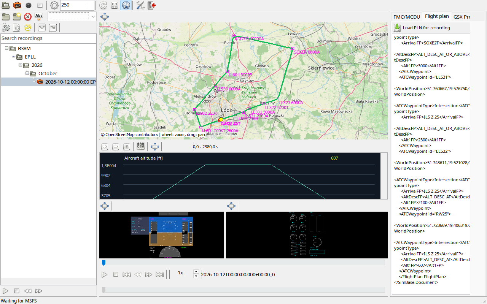

First size the library and data tabs, then distribute map, chart and instrument heights with splitters. Resizing preserves panel proportions. Instruments retain their geometry, so unused side margins are expected; stretching an artificial horizon would be incorrect.
Drag a tab header outside its panel to detach it, or onto a docking target to join another window. The frame window action toggles docked/floating state and its icon reflects the state. Closing a floating view restores its content. An empty host should collapse after all tabs detach. Each view stores its docking state and geometry independently.
The center contains map, charts, instruments and time controls. The library is left; data tabs are right. Splitters allocate available space.
| Option / action | Behavior and limitations |
|---|---|
| Separate window | The window action moves the same frame into a floating window and changes its icon. Data and timeline synchronization remain intact. |
| Tabs | Drag a tab header to detach it; dock on a tab strip or available edge target. Closing the floating tab returns it to its home host. |
| Combined instruments | PFD and EICAS/ECAM can share a floating instrument host. Use docking targets rather than stretching an unrelated tab's content. |
| Resize | Panels preserve proportions. Instruments retain aspect ratio and may show margins instead of distortion. |
| Saved layout | Docked state and each floating window's position/size are remembered. A host without any docked tabs should collapse. |
| Reset | Restore default panel layout in Settings after a monitor change or inconvenient arrangement. It resets the workspace, not flight data. |
